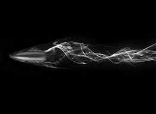

22 de abril de 1848: El Erebus y el Terror son abandonados después de un año y siete meses atrapados en el hielo. 25 de abril de 1848: Fecha de la segunda nota, que dice que 24 hombres han muerto y los sobrevivientes planean marchar al sur el 26 de abril, hacia el río Back.
texto de prueba

para erika dayana 22 de abril de 1848: El Erebus y el Terror son abandonados después de un año y siete meses atrapados en el hielo. 25 de abril de 1848: Fecha de la segunda nota, que dice que 24 hombres han muerto y los sobrevivientes planean marchar al sur el 26 de abril, hacia el río Back.